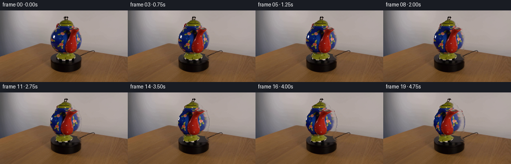
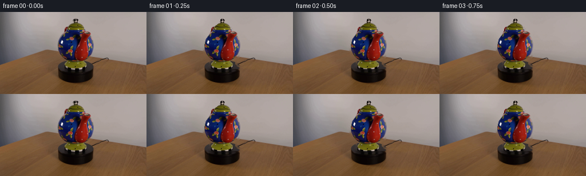

CODING AGENTS AS PIXEL WORLD MODELS
traex/GPT-5.6-Sol · 0177
点击播放 · 原生 RGB 像素
逐轮保存的候选
回放视频、检查图与代码变化。
每份候选均可单独播放。实际图片检查记录在下方工具轨迹中。
候选 01播放与检查图
点击播放 · 原生 RGB 像素


展开代码变化
--- 上一保存版本
+++ 本次保存版本
@@ -0,0 +1,164 @@
+"""Generate a locked-camera video of the teapot slowly rotating in place.
+
+The single supplied view is treated as the visible half of a surface of
+revolution. For subsequent frames it is re-projected around the vertical
+axis, with a conservative reflected continuation for the small amount of the
+far side that becomes visible. Everything outside the teapot is copied from
+the source frame, keeping both camera and black platform perfectly locked.
+"""
+
+from pathlib import Path
+
+import cv2
+import numpy as np
+from PIL import Image, ImageDraw
+
+import artifact_io
+
+
+HERE = Path(__file__).resolve().parent
+W, H = 256, 144
+N_FRAMES = 20
+
+
+def teapot_envelope(scale: int = 4) -> np.ndarray:
+ """Return a softly antialiased mask for the teapot, excluding its stand."""
+ # Hand-traced row extrema. The points follow the knob, lid, rounded pot,
+ # lower rim and feet visible in first_frame.png. In particular, stopping
+ # at y=99 leaves the black platform untouched.
+ y = np.array([11, 13, 16, 18, 20, 23, 26, 29, 32, 35, 39, 43,
+ 47, 51, 55, 59, 63, 67, 71, 75, 79, 83, 87, 91,
+ 95, 98, 100], dtype=np.float32)
+ left = np.array([131, 129, 128, 127, 125, 121, 114, 112, 112, 110,
+ 109, 106, 103, 102, 101, 100, 100, 101, 103, 105,
+ 108, 111, 112, 112, 111, 109, 112], dtype=np.float32)
+ right = np.array([134, 136, 138, 140, 142, 145, 148, 150, 151, 158,
+ 159, 160, 162, 163, 164, 164, 164, 163, 162, 161,
+ 159, 156, 155, 155, 158, 163, 160], dtype=np.float32)
+
+ canvas = Image.new("L", (W * scale, H * scale), 0)
+ draw = ImageDraw.Draw(canvas)
+ polygon = ([(int(round(x * scale)), int(round(yy * scale)))
+ for x, yy in zip(left, y)] +
+ [(int(round(x * scale)), int(round(yy * scale)))
+ for x, yy in zip(right[::-1], y[::-1])])
+ draw.polygon(polygon, fill=255)
+ # LANCZOS downsampling gives an edge transition narrower than one pixel.
+ return np.asarray(canvas.resize((W, H), Image.Resampling.LANCZOS),
+ dtype=np.float32) / 255.0
+
+
+def row_geometry(alpha: np.ndarray):
+ """Smooth center and radius of the traced object for every image row."""
+ ys = np.arange(H, dtype=np.float32)
+ py = np.array([11, 13, 16, 18, 20, 23, 26, 29, 32, 35, 39, 43,
+ 47, 51, 55, 59, 63, 67, 71, 75, 79, 83, 87, 91,
+ 95, 98, 100], dtype=np.float32)
+ pl = np.array([131, 129, 128, 127, 125, 121, 114, 112, 112, 110,
+ 109, 106, 103, 102, 101, 100, 100, 101, 103, 105,
+ 108, 111, 112, 112, 111, 109, 112], dtype=np.float32)
+ pr = np.array([134, 136, 138, 140, 142, 145, 148, 150, 151, 158,
+ 159, 160, 162, 163, 164, 164, 164, 163, 162, 161,
+ 159, 156, 155, 155, 158, 163, 160], dtype=np.float32)
+ left = np.interp(ys, py, pl)
+ right = np.interp(ys, py, pr)
+ center = (left + right) * 0.5
+ radius = np.maximum((right - left) * 0.5, 1.5)
+ return left, right, center, radius
+
+
+def make_background(source: np.ndarray, alpha: np.ndarray) -> np.ndarray:
+ """Fill the occluded area for subpixel edge exposure during reprojection."""
+ # Inpainting is only exposed in a very thin boundary sliver. A small
+ # dilation prevents remnants of the original colored edge from leaking.
+ hard = (alpha > 0.02).astype(np.uint8) * 255
+ hard = cv2.dilate(hard, np.ones((5, 5), np.uint8), iterations=1)
+ return cv2.inpaint(source, hard, 5, cv2.INPAINT_TELEA)
+
+
+def render_rotated(source: np.ndarray, background: np.ndarray,
+ base_alpha: np.ndarray, theta: float,
+ geometry) -> np.ndarray:
+ """Render one yaw angle using an inverse cylindrical texture projection."""
+ left, right, center, radius = geometry
+ yy, xx = np.mgrid[0:H, 0:W].astype(np.float32)
+
+ # Rotating an asymmetric solid gradually reverses its small row-center
+ # offsets. The factor is deliberately restrained so the pot stays fixed
+ # over its point of contact rather than appearing to translate.
+ axis = 132.0
+ target_center = axis + (center - axis) * np.cos(theta)
+ target_radius = radius * (1.0 - 0.018 * np.sin(theta) ** 2)
+ u = (xx - target_center[:, None]) / target_radius[:, None]
+ inside = np.abs(u) <= 1.0
+
+ # Target surface angle and corresponding angle in the original view.
+ # Positive theta moves frontal markings left, the screen-space motion of
+ # a clockwise turn as seen from above.
+ phi_target = np.arcsin(np.clip(u, -1.0, 1.0))
+ phi_source = phi_target + theta
+
+ # The input supplies the frontal hemisphere. Continue the newly revealed
+ # strip by reflection about the tangent. At the requested slow 32-degree
+ # turn this affects only a narrow rim and avoids inventing unrelated detail.
+ half_pi = np.float32(np.pi * 0.5)
+ reflected = np.abs(phi_source) > half_pi
+ phi_sample = phi_source.copy()
+ phi_sample = np.where(phi_sample > half_pi, np.pi - phi_sample, phi_sample)
+ phi_sample = np.where(phi_sample < -half_pi, -np.pi - phi_sample, phi_sample)
+
+ map_x = center[:, None] + radius[:, None] * np.sin(phi_sample)
+ map_y = yy
+ sampled = cv2.remap(source, map_x.astype(np.float32), map_y,
+ interpolation=cv2.INTER_CUBIC,
+ borderMode=cv2.BORDER_REFLECT_101)
+
+ # Dim the far-side continuation subtly. Fixed, screen-space illumination
+ # also maintains the ceramic volume while its painted texture advances.
+ far_amount = np.clip((np.abs(phi_source) - half_pi) / max(theta, 1e-5),
+ 0.0, 1.0)
+ side_dim = 1.0 - 0.13 * far_amount * reflected
+ fixed_light = 1.0 + 0.025 * np.cos(phi_target + 0.55) - 0.018
+ shaded = sampled.astype(np.float32) * side_dim[..., None] * fixed_light[..., None]
+
+ # Carry the traced silhouette with the same very small shape adjustment.
+ alpha_map_x = center[:, None] + (xx - target_center[:, None]) * (
+ radius[:, None] / target_radius[:, None])
+ moved_alpha = cv2.remap(base_alpha, alpha_map_x.astype(np.float32), map_y,
+ interpolation=cv2.INTER_LINEAR,
+ borderMode=cv2.BORDER_CONSTANT, borderValue=0)
+ moved_alpha *= inside.astype(np.float32)
+
+ # Keep antialiasing but make the broad interior entirely opaque, avoiding
+ # any inpainted background wash in the colored body.
+ moved_alpha = np.clip(moved_alpha * 1.35, 0.0, 1.0)
+ out = (shaded * moved_alpha[..., None] +
+ background.astype(np.float32) * (1.0 - moved_alpha[..., None]))
+ return np.clip(np.rint(out), 0, 255).astype(np.uint8)
+
+
+def main() -> None:
+ source = np.asarray(Image.open(HERE / "first_frame.png").convert("RGB"),
+ dtype=np.uint8)
+ if source.shape != (H, W, 3):
+ raise ValueError(f"unexpected source dimensions: {source.shape}")
+
+ alpha = teapot_envelope()
+ geometry = row_geometry(alpha)
+ background = make_background(source, alpha)
+
+ frames = np.empty((N_FRAMES, H, W, 3), dtype=np.uint8)
+ frames[0] = source # required to be pixel-identical
+
+ # A smooth constant 6.74 degrees/second: clearly perceptible, but still a
+ # slow scientific-display rotation over the 4.75 seconds represented.
+ max_angle = np.deg2rad(32.0)
+ for index in range(1, N_FRAMES):
+ theta = max_angle * index / (N_FRAMES - 1)
+ frames[index] = render_rotated(source, background, alpha, theta, geometry)
+
+ artifact_io.save(frames, HERE)
+
+
+if __name__ == "__main__":
+ main()
可观测工具轨迹
实际执行的命令与返回图片。
命令 1exit 0
/bin/bash -lc "cat GENERATION_RULES.md && printf '\\n--- PROMPT ---\\n' && cat prompt.txt"
命令 2exit 127
/bin/bash -lc "find . -maxdepth 2 -type f -printf '%p\\n' | sort && printf '\\n--- IMAGE INFO ---\\n' && file first_frame.png && python3 - <<'PY'
from PIL import Image
im=Image.open('first_frame.png')
print(im.mode, im.size)
print('extrema', im.getextrema())
PY"命令 3exit 0
/bin/bash -lc "python3 - <<'PY'
from PIL import Image
import numpy as np
im=np.array(Image.open('first_frame.png').convert('RGB'))
print('shape dtype',im.shape,im.dtype)
print('channel min max mean std')
for i,c in enumerate('RGB'):
print(c,im[...,i].min(),im[...,i].max(),im[...,i].mean(),im[...,i].std())
# samples grid
for y in [0,10,20,30,40,50,60,70,80,90,100,110,120,130,143]:
print(y,[tuple(im[y,x]) for x in [0,16,32,48,64,80,96,112,128,144,160,176,192,208,224,240,255]])
# rough color count
q=(im//32).reshape(-1,3)
u,c=np.unique(q,axis=0,return_counts=True)
ix=np.argsort(c)[-20:][::-1]
print('top quantized bins')
for j in ix: print(tuple(u[j]*32),c[j])
# grayscale gradients bounds by rows/cols
g=(0.2126*im[...,0]+.7152*im[...,1]+.0722*im[...,2])
print('row mean')
for y in range(0,144,4): print(y,round(g[y].mean(),1),round(g[y].std(),1))
PY"命令 4exit 0
/bin/bash -lc "python3 - <<'PY'
from PIL import Image
import numpy as np, colorsys
im=np.array(Image.open('first_frame.png').convert('RGB'))
# 2x2 blocks classify by mean hue/saturation/value
for yy in range(0,132,2):
s=''
for xx in range(0,256,2):
r,g,b=im[yy:yy+2,xx:xx+2].mean((0,1))/255
h,st,v=colorsys.rgb_to_hsv(r,g,b)
if v<.10: c='K'
elif st<.12: c='.' if v>.55 else ','
elif st<.28: c='g' if v>.5 else ':'
elif h<.04 or h>.96: c='R'
elif h<.10: c='o'
elif h<.18: c='Y'
elif h<.45: c='G'
elif h<.58: c='C'
elif h<.72: c='B'
elif h<.88: c='M'
else: c='r'
s+=c
print(f'{yy:03d} {s}')
PY"命令 5exit 0
/bin/bash -lc "python3 - <<'PY'
from PIL import Image
import numpy as np
im=np.array(Image.open('first_frame.png').convert('RGB')).astype(float)/255
mx=im.max(2); mn=im.min(2); sat=(mx-mn)/(mx+1e-6); val=mx
for y in range(8,110,2):
m=(sat[y]>.22)|(val[y]<.28)
# central only runs
runs=[]; on=False
for x in range(50,211):
if m[x] and not on: a=x;on=1
if on and (not m[x] or x==210):
b=x if (m[x] and x==210) else x-1
if b-a>=1:runs.append((a,b))
on=0
print(f'{y:3}',runs)
PY"命令 6exit 0
/bin/bash -lc "sed -n '1,240p' artifact_io.py"
命令 7exit 0
/bin/bash -lc "python3 - <<'PY' mods=['cv2','scipy','imageio','numpy','PIL'] for m in mods: try: q=__import__(m); print(m,'ok',getattr(q,'__version__','')) except Exception as e: print(m,'ERR',e) PY"
命令 8exit 0
/bin/bash -lc "python3 - <<'PY'
from PIL import Image
import numpy as np, colorsys
im=np.array(Image.open('first_frame.png').convert('RGB'))
# color symbol pixel resolution region x90:175, y8:108
for y in range(8,108):
if y%2: continue
s=''
for x in range(90,176):
if x%2: continue
r,g,b=im[y:y+2,x:x+2].mean((0,1))/255
h,st,v=colorsys.rgb_to_hsv(r,g,b)
if v<.10:c='#'
elif v<.22:c='k'
elif st<.12:c='.'
elif st<.25:c=','
elif h<.04 or h>.96:c='R'
elif h<.10:c='o'
elif h<.18:c='Y'
elif h<.42:c='G'
elif h<.58:c='C'
elif h<.72:c='B'
elif h<.88:c='M'
else:c='r'
s+=c
print(f'{y:03} {s}')
PY"命令 9exit 0
/bin/bash -lc "python3 - <<'PY'
from PIL import Image
import numpy as np, colorsys
im=np.array(Image.open('first_frame.png').convert('RGB'))
for y in [12,16,20,24,28,32,34,36,40,44,48,52,56,60,64,68,72,76,80,84,88,92,96,100]:
print('\\ny=',y)
# runs in quantized classification in x85:181
last=None;a=None
for x in range(85,182):
r,g,b=im[y,x]/255
h,s,v=colorsys.rgb_to_hsv(r,g,b)
if v<.1:c='BK'
elif v<.25:c='DK'
elif s<.12:c='GY'
elif s<.24:c='DS'
elif h<.035 or h>.97:c='RD'
elif h<.105:c='OR'
elif h<.19:c='YL'
elif h<.5:c='GN'
elif h<.73:c='BL'
elif h<.88:c='MG'
else:c='RP'
if c"'!=last:
if last is not None: print(f'"'{a}-{x-1}:{last}',end=' ')
last=c;a=x
print(f'{a}-181:{last}')
PY"命令 10exit 0
/bin/bash -lc "python3 generate.py && python3 - <<'PY'
import numpy as np
from PIL import Image
z=np.load('pixels.npz')['pixels']
frames=np.stack([np.array(Image.open(f'frames/{i:02d}.png')) for i in range(20)])
src=np.array(Image.open('first_frame.png').convert('RGB'))
print('frames',frames.shape,frames.dtype)
print('frame0 identical',np.array_equal(frames[0],src),'maxdiff',np.abs(frames[0].astype(int)-src).max())
for i in range(20):
d=np.abs(frames[i].astype(int)-src.astype(int))
ch=np.any(d,2)
yy,xx=np.where(ch)
print(i,'changed',ch.sum(),'mad',round(d.mean(),3),'bbox',None if not len(xx) else (xx.min(),yy.min(),xx.max(),yy.max()))
print('packed',z.shape,z.dtype)
PY"命令 11exit 0
/bin/bash -lc "python3 - <<'PY'
import numpy as np
from PIL import Image
F=np.stack([np.array(Image.open(f'frames/{i:02d}.png')).astype(int) for i in range(20)])
for i in range(1,20):
d=np.abs(F[i]-F[i-1]); print(i,round(d.mean(),3),np.any(d,2).sum(),np.percentile(d[d>0],[50,90,99]).round(1) if np.any(d) else '')
# unchanged outside conservative zone x95:170,y6:104?
for i in [1,10,19]:
mask=np.ones((144,256),bool);mask[6:105,95:170]=False
print('outside',i,np.abs(F[i]-F[0])[mask].max(),np.any(F[i]"'!=F[0],2)[mask].sum())
PY
ls -lh pixels.npz index.html inspection.png transition_check.png frames/*.png | tail -8'命令 12exit 0
/bin/bash -lc 'set -e
python3 -m py_compile generate.py
before=$(sha256sum pixels.npz | cut -d'"' ' -f1)
python3 generate.py
after="'$(sha256sum pixels.npz | cut -d'"' ' -f1)
python3 - <<'PY'
from pathlib import Path
import numpy as np
from PIL import Image
src=np.asarray(Image.open('first_frame.png').convert('RGB'))
frames=np.stack([np.asarray(Image.open(f'frames/{i:02d}.png').convert('RGB')) for i in range(20)])
assert frames.shape==(20,144,256,3)
assert frames.dtype==np.uint8
assert np.array_equal(frames[0],src)
assert len(list(Path('frames').glob('*.png')))==20
# The locked set is exact outside the teapot's conservative working rectangle.
locked=np.ones((144,256),bool); locked[6:105,95:170]=False
assert np.array_equal(frames[:,locked],np.broadcast_to(src[locked],frames[:,locked].shape))
print('validation: PASS')
print('shape:',frames.shape,'dtype:',frames.dtype)
print('frame 00 exact:',np.array_equal(frames[0],src))
print('final changed pixels:',np.any(frames[-1]"'!=src,axis=2).sum())
print('"'outputs:',all(Path(p).exists() for p in ['pixels.npz','index.html','inspection.png','transition_check.png']))
PY
printf 'reproducible: %s\\n' \""'$([ "$before" = "$after" ] && echo PASS || echo FAIL)"
printf '"'sha256 pixels.npz: %s\\n' \""'$after"'保存候选 1 份；完成命令 12 次；可验证图片返回 0 张。原始 API 响应与完整日志保留在本地。